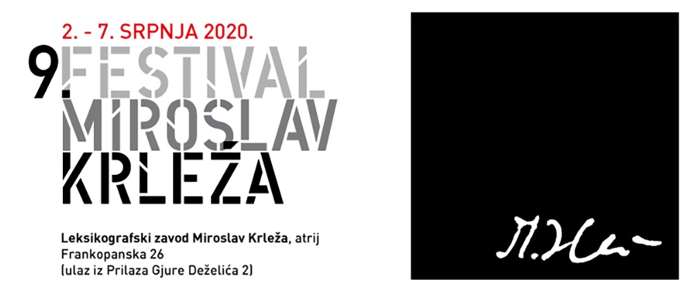

Ovogodišnji Festival Miroslav Krleža održava se od 2. do 7. srpnja. Budući da je potres ugrozio prostor ambijentalnoga teatra na Gvozdu, festivalski program održava se u atriju Leksikografskoga zavoda (Frankopanska 26, ulaz iz Prilaza Gjure Deželića 2), a izveden je u suradnji s Gradskim dramskim kazalištem Gavella. Deveto izdanje Festivala vraća se Krležinu rodnom gradu.
»U fokusu programa je Krležin Zagreb, stvarni i imaginarni. Izmjestiti Krležu iz Zagreba nemoguće je kao što je nemoguće Pirandellu oduzeti Siciliju, Kafki Prag, Babelju Odesu, a Dostojevskom Petrograd. Ukusi se mijenjaju, idoli stare, mode su sve hirovitije, a ipak svi mi imamo svoju prijestolnicu bola. Naša je ranjeni Zagreb«, stoji u uvodnome tekstu programske knjižice, koji potpisuje Goran Matović, autor i ravnatelj Festivala Miroslav Krleža.
Festival otvara Rade Šerbedžija izvedbom monodrame Moj obračun s njima, u četvrtak 2. srpnja u 21 sat. Program se nastavlja monološkom freskom Na rubu pameti u interpretaciji Dragana Despota i monodramom Bobočka u izvedbi Ecije Ojdanić. U popratnome festivalskom programu organizira se niz zanimljivih događaja: razgovori i čitanja fragmenata Krležinih djela, umjetnički performansi, izložba Krležinih rukopisa, predstavljanje reprinta Krležine knjige Tri kavalira gospodjice Melanije.
Osim Gradskoga dramskog kazališta Gavella ove godine na Festivalu sudjeluju i HNK Varaždin dramom Maskerata u režiji Ivana Planinića te HNK Mostar predstavom Kraljevo u režiji Ivana Lea Leme. U završnome događanju bit će izvedena predstava Djetinjstvo u Agramu, realizirana u koprodukciji s Gavellom, prema zamisli i režiji Senke Bulić i Ane Prolić.
Festivalski program završava 7. srpnja u 7 sati (vrijeme Krležina rođenja) tradicionalnim gastronomsko-nadrealističkim susretom Doručak kod Krleže u Kazališnoj kavani. »Iznimno je važno još jednom ponoviti koliko je Miroslav Krleža bitan kao kroničar korektivne historiografije dvokatnoga Zagreba, Hrvatske i Europe.«
Više o festivalskom programu možete pročitati na poveznici: